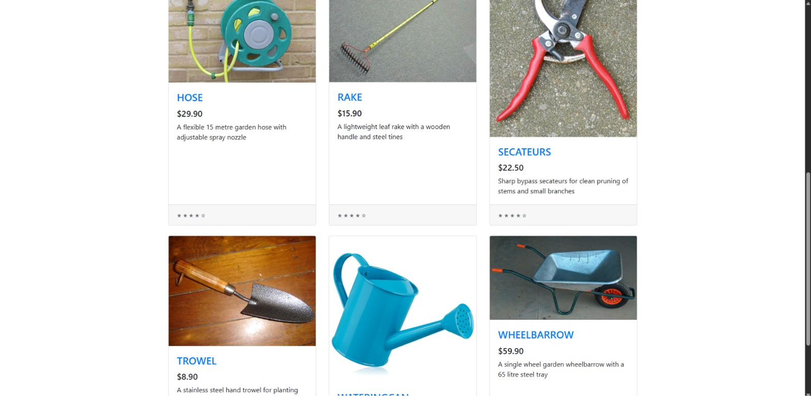

A secure three-tier product catalogue on AWS — private database, public web tier, object storage — delivered inside a $50 budget, then optimised against all six Well-Architected pillars.
My role
Sole engineer, full stack
System type
Three-tier web application
Constraint
$50 total budget
Format
Solo project
4
Subnets, 2 AZs
9
Products served
6
Pillars optimised
$50
Budget ceiling
01 — Project scope & client's problem
Cost-effective, reliable, efficient and secure — on fifty dollars.
The brief asked for a working cloud application for an e-commerce business that met all four qualities at once, with a hard $50 ceiling. Those goals pull against each other, and the budget removed the standard answers: no managed load balancer, no Multi-AZ database failover, no generously sized instances.
The architecture was fixed — web server, VPC, relational database and object storage — with a home page showing nine products, records held in the database and images served from object storage. That separation is the point: it forces the application to integrate three distinct services rather than serving everything from one box.
02 — My role & solution
Sole engineer, from network layer to application.
I designed and provisioned the entire stack. The foundation is a VPC on 10.0.0.0/16 spanning two availability zones, divided into two public and two private subnets. That division is the central security decision: the EC2 web server sits in a public subnet, while the RDS MySQL instance lives in a private subnet group across both AZs, so the database is never directly addressable from the internet.
On the instance, a Flask application runs behind nginx as a systemd service so it survives reboots, exposing create, insert, select and update routes against the database. The nine product images sit in a separate S3 bucket and the page template pulls each one straight from the bucket URL — keeping large binary objects out of the database entirely, which is both cheaper and faster than storing them as blobs.
The architecture — tap any resource
03 — My work process
Built bottom-up, verifying each layer before adding the next.
01
Network firstVPC, four subnets across two availability zones, and the security group — before launching anything that would live inside it.
02
ComputeA t3.micro Ubuntu instance in the public subnet with an RSA key pair, verified reachable before going further.
03
StorageRDS MySQL inside a private subnet group, and an S3 bucket holding the nine product images.
04
Wire the applicationPointed Flask at the RDS endpoint and the template at the bucket, then exercised the full CRUD path through the app's own routes.
05
Optimise against all six pillarsOne improvement per Well-Architected pillar, each implemented independently with a demonstrable outcome.
06
EvidenceConsole screenshots of every resource with the account ID visible, plus a labelled architecture diagram.
04 — Outcome & results achieved
A working catalogue, then six measurable improvements.
The finished site renders all nine products with live data — name, price and description read from RDS, images served from S3 — with full create, read and update support through the application. It stayed within the $50 ceiling by keeping the instance small, disabling NAT gateways and stopping billable resources between sessions.
Six improvements, one per pillar — tap to expand
Isolated data tierDatabase private across two AZs
Separated concernsRecords in RDS, binaries in S3
Monitored & alarmedCPU alarm and budget alert wired to email
Under budgetDelivered within the $50 ceiling

Live product page — records from RDS, images from S3, rendered by Flask.Performance dashboard — the four-widget CloudWatch view, with FreeableMemory on its own axis.Provisioned compute — the EC2 instance backing the web tier.
Limitations & what I would improve
Credentials live in the application source. The database endpoint, username and password are written directly into app.py. That is acceptable in a teaching sandbox and unacceptable anywhere else — the correct fix is AWS Secrets Manager with an IAM role attached to the instance, so no credential ever appears in code or in a screenshot.
The budget forced real trade-offs. A single EC2 instance in one availability zone is a single point of failure; production would need an Auto Scaling group behind an Application Load Balancer. The database runs without Multi-AZ failover for the same reason. SSH is open to any IP and should be narrowed to a known range.